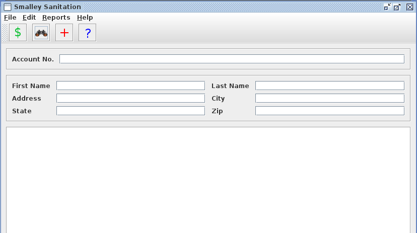

To search for a customer:
OR
The search form will be displayed.

There are multiple ways to search for a customer.
The entire account number doesn't have to be keyed in. By default, the program uses wild cards automatically when searching by the account number. To search by account number:
If searching by any of the other fields, a % sign can be used for a wild card. Each field is also case-insensititive. For example, if searching for a first name of John, one could type in "jo%" to get anybody with the first name that starts with jo.
Each field can be mixed and matched. You can search by the address and zip, or by the last name and state, or any combination of the fields.